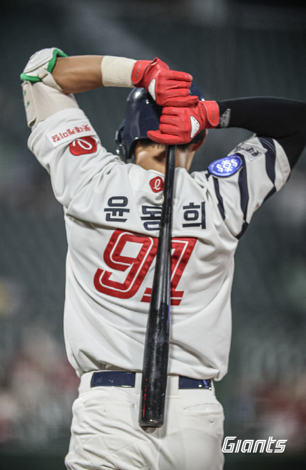
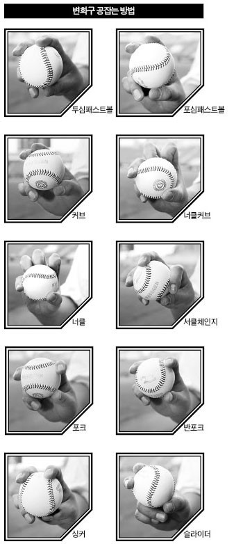
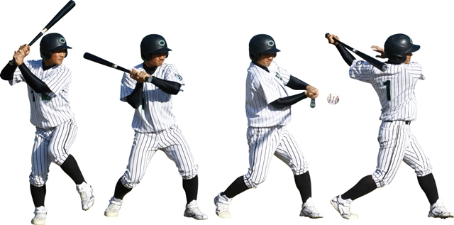

1. 윤동희에 대한 정보
| 윤동희 91 | |||
|  | 출생 | 2003년 9월 18일 21세 | |
| 국적 | 대한민국 | ||
| 신체정보 | 키 | 187cm | |
| 몸무게 | 85kg | ||
| 혈액형 | b형 | ||
2. 윤동희 응원가
| 응원가 | |
|
롯데의~ 윤동희! 쌔리라 안타 쌔리라~ 최강롯데 자이언츠! 윤동희~ (안타!) 롯데의~ 윤동희! 쌔리라 안타 쌔리라~ 최강롯데 자이언츠! 윤동희~ (안타!) |
|
3. 윤동희의 습관
웃을 때 옆 사람의 어깨를 때리는 습관이 있는 듯. 친한 사람들 한정인 것으로 보인다. 피해자는 주로 김민석과 손성빈.
스스로 “난 아직도 배우는 과정”이라면서 메모하는 습관에 대해 설명했다. 그는 “지금 어떻에 해야할지 메모를 해놓는다. 핸드폰에 생각날 때마다 메모를 해놓는 편이다. 세줄씩 짧게 메모를 하다가 시즌 끝날 때 되면 많아진다. 느낄 때마다 적고 또 전준우 선배님이 뭘 알려주셨을 때 적는다.
4. 부산갈매기
| 응원가 | |
|
1절 지금은 그 어디서 내 생각 잊었는가 꽃처럼 어여쁜 그 이름도 고왔던 순이 순이야 파도치는 부둣가에 지나간 일들이 가슴에 남았는데 부산 갈매기 부산 갈매기 너는 정녕 나를 잊었나 2절 지금은 그 어디서 내 모습 잊었는가 꽃처럼 어여쁜 그 이름도 고왔던 순이 순이야 그리움이 물결치며 오늘도 못잊어 네 이름 부르는데 부산 갈매기 부산 갈매기 너는 벌써 나를 잊었나 후렴 부산 갈매기 부산 갈매기 너는 벌써 나를 잊었나 |
|
5. 야구공 잡는 방법
투심 패스트볼은 포심 패스트볼보다 구속은 느리지만 타자의 범타나 헛스윙을 노릴때 좋다.서클 채인지는 공을 일부러 중지와 약지로 잡음으로써 손목의 힘이 온전히 전달되는 축으로부터 공을 비스듬히 놓아 더더욱 힘이 전달되지 않도록 한다.포크볼은 검지와 중지를 최대한벌리고 그 사이에 포크로 음식을 찍듯이 공을 끼워 잡는다.속구와 같은 투구 동작으로 던지되 마치 허공에 팔을강하게 휘두르는 느낌으로 공을 놓는다.

6. 야구공 치는 방법
오른팔과 왼팔은 임팩트 순간까지 가슴에 붙이고 허리를 돌리면서 몸의 회전력에 의해서 배트에 가속을 붙입니다.스윙의 궤도는 다운 궤도를 그리고 공에서 시선을 떼지 않는 것이 중요합니다. 오른팔이 가슴 부분에 붙어서 나오는 것이 아주 중요합니다.
